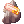
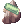
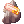
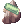
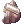
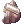
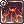

Zrzovous's guide to Dynite Farming
Introduction
Hello guys, my name is Zrzovous, I'm from Czech Republic and my name actually means "GingerBeard" in English (that's why I'm trying to have all characters with red hair if possible).
I am a huge fan of PvM Shadow Chaser and so far I've been maining him on each server I've been playing on. Shadow Chaser is a versatile character allowing me to explore various combinations of skills and equip like no other character.
Thanks to this feature I've figured out the most effective and cheap way of farming  Dynites in Einbech Mine Level 3 dungeon!
Dynites in Einbech Mine Level 3 dungeon!
What's Dynite?
As you know, Dynites are quite expensive ingredients used to craft items like  Claw Sword [2],
Claw Sword [2],  Bolt Crusher [2] or
Bolt Crusher [2] or  Welding Wand [2], and also to craft very powerful enchanting stones ( Physical Modification Permit and
Welding Wand [2], and also to craft very powerful enchanting stones ( Physical Modification Permit and  Magical Modification Permit) to enchant these items.
To craft a random item you need to have 50 Dynites, to craft the enchanting stone you need 30 Dynites.
Magical Modification Permit) to enchant these items.
To craft a random item you need to have 50 Dynites, to craft the enchanting stone you need 30 Dynites.
Dynites can be obtained in two ways:
- by crafting them from sets of Einbech Mine Ores (
 Redium,  Odium,  Rindium,
Redium,  Odium,  Rindium,  Purdium,  Whidium)
Purdium,  Whidium) - or dropping them from Jewels as a whole.
Ores drop from most of the monsters in the dungeon with 5% chance (if your party is of 3 members max), or with 15% drop chance from the Jewel.
You can also get a random ore from the  Unidentified Ore - a 100% drop chance Jewel monster exclusive drop.
Jewel can also drop a complete Dynite with 5% drop chance.
Unidentified Ore - a 100% drop chance Jewel monster exclusive drop.
Jewel can also drop a complete Dynite with 5% drop chance.
Knowing that, it probably makes sense the easiest way to obtain ores and Dynites is from Jewels.
Jewel
Here's what the Jewel looks like:
| Image | Name | Level | HP | Size / Race / Element |
|---|---|---|---|---|

|
Jewel | 192 | 100 | Large / Formless / Neutral 4 |
As you can see, it is a Plant type mob, so it receives 1 damage with each hit. It takes 100 hits to kill it.
Knowing this, what's the fastest way to deal 100 hits?
Killing Jewel
Some people use various skills, such as:
 Freezing Spear as Oboro/Kagerou
Freezing Spear as Oboro/Kagerou Spiral Pierce as Rune Knights
Spiral Pierce as Rune Knights
Others "cheat" their farm up with:
- Burning Status from  Magma Eruption as Mechanics
- "sacrificing Jewel's" 400 HP with
 White Imprison as Warlocks...
White Imprison as Warlocks...
The strategies above are not a bad strategies, however they lack one advantage Shadow Chaser has over other classes:  Snatcher
Snatcher
Thanks to this skill the Shadow Chaser increases his profit from the hunt as he's meant to! Let's get to the build, shall we?
Shadow Chaser Build
Obviously you'll need to level up your Shadow Chaser to level 180, otherwise you can't enter the Einbech Mine Level 3 dungeon.
For leveling, I'd personally recommend using standard  Fatal Menace build. Just get the
Fatal Menace build. Just get the  Black Wing [1] with
Black Wing [1] with  Hunter Fly Card in it, use
Hunter Fly Card in it, use  Rideword Hat [1] and the
Rideword Hat [1] and the  Incubus pet. Tons of HP/SP leech, awesome damage, very fast way to get to the needed level!
Incubus pet. Tons of HP/SP leech, awesome damage, very fast way to get to the needed level!
Once you reach level 180, you can reset your stats and skills.
Stats
| Stat | Amount |
|---|---|
| STR | 1 |
| AGI | 120+ |
| VIT | 100 |
| INT | 100 |
| DEX | 100+ |
| LUK | 100+ |
The aim is to have status immunity and some survivability, while ensuring maximum ASPD. STR is not important, because the Ores weigh almost nothing.
Skills
From skills there are only few important ones:

Optionally get the  Hiding for your toilet breaks.
Hiding for your toilet breaks.
The rest of the skill tree is completely irrelevant, so add those point to whatever you want, or don't add them at all.
You'll need to copy two skills:
- With
 Plagiarism copy at least Level 7
Plagiarism copy at least Level 7  Cold Bolt and keep it saved at all times with
Cold Bolt and keep it saved at all times with  Preserve.
Preserve. - With
 Reproduce copy
Reproduce copy  Flying Side Kick.
Flying Side Kick.
Items
With items you'll need to focus on two important things:
- Get the maximum ASPD
- Get as many Bolt autocasts as possible
| Slot | Item | Important stats |
|---|---|---|
| Headgear (top) |  Smokie Transformation Leaves [1] or Vanilmirth Hat Smokie Transformation Leaves [1] or Vanilmirth Hat
|
5% to autocast one of the Bolts with each physical attack. |
| Headgear (mid) |  Sigrun's Wings Sigrun's Wings
|
+1 ASPD |
| Headgear (low) |  CD in Mouth CD in Mouth
|
6% to autocast one of Bolts with each physical attack. |
| Chest | any body armor | |
| Right Hand |  Elemental Sword with 3x Elemental Sword with 3x  Dancing Marionette Cards Dancing Marionette Cards
|
To autocast Level 3 Bolts when casting any of the Bolts |
| Left Hand |  Cursed Knight's Shield [1] with Cursed Knight's Shield [1] with  Knight Khalitzburg Card Knight Khalitzburg Card
|
To reduce damage from Medium and Large monsters |
| Garment | +9  Heroic Backpack[1] with Heroic Backpack[1] with  Cenere Card Cenere Card
|
+1 ASPD, +32% ASPD |
| Footgear | +7  Clergy Boots [1] Clergy Boots [1]
|
+20% ASPD and other stats if enchanted |
| Right Accessory | Buffalo Horn [1] with  Gazeti Card Gazeti Card
|
+1 ASPD, 10% to autocast Cold Bolt
|
| Left Accessory |  Bison Horn [1] with Bison Horn [1] with  Creamy Card Creamy Card
|
+1 ASPD,  Teleport!!! Teleport!!!
|
Consumables
Unfortunately, this build is capable of killing the Jewel pretty quickly thanks to all the autocast Bolts and the 193 ASPD, however you can get easily surrounded by mobs resulting in sustaining few hits. You will survive most of the time, once you get used to this strategy, but you will need to replenish your HP/SP.
Fortunately NovaRO has pretty cool solution to this:
 Gin Rejuvenation Potion for 1 hour HP regeneration
Gin Rejuvenation Potion for 1 hour HP regeneration Gin Potion of Energy for 1 hour SP regeneration
Gin Potion of Energy for 1 hour SP regeneration Shining Defense Scroll for 1 hour DEF and MDEF buff
Shining Defense Scroll for 1 hour DEF and MDEF buff
All of these items can be obtained from Main Office 2nd floor for the  Endeavor Tokens.
With these items you will be able to step into the dungeon and farm for 1 hour without any troubles.
Endeavor Tokens.
With these items you will be able to step into the dungeon and farm for 1 hour without any troubles.
Farming Strategy
Now you know, what character to use, what stats, skills and items to get, but you still don't know, how to farm.
GRF
It's not so important, if you have a really good sight, but it may really help to increase the size of Jewel, so you can actually see it when teleporting really fast. I'm not going to cover the guide on how to change the GRF to achieve a bigger monster size - but I'd like to let you know this option exists and it may make things easier for you.
How to farm
The whole idea is simple:
- Use
/fastrefreshcommand to have faster screen loading after teleport. - Before you do anything else use Preserve and
 Auto Shadow Spell to autocast Cold Bolt.
Auto Shadow Spell to autocast Cold Bolt. - Use Warper -> Dungeons -> Einbech Dungeon, teleport to the 2nd floor, then teleport to the 3rd floor.
- Use Teleport as many times as needed unless you spot Jewel.
- Use Flying Side Kick to quickly get to Jewel and start autoattacking it.
- The autocast Bolts will cause your After Cast Delay to prevent you from using another Teleport, so feel free to keep hitting Teleport while you're attacking the Jewel. You will be able to teleport only after the Jewel is dead, so you won't lose your drop.
- Make sure you always have your Preserve and Auto Shadow Spell buffs on.
With each Jewel you kill you will get at least one Unidentified Ore, but most of the time 2 of them.
Thanks to the /fastrefresh command you can teleport really fast, and thanks to the regeneration potions and the DEF/MDEF scroll you'll survive everything.
Conclusion
I've decided to share my experience as I believe the NovaRO community is one of the healthiest ones I've ever encountered and I am hoping this will help others to earn some extra zeny for a really low cost. See you in the dungeon! -- Zrzovous